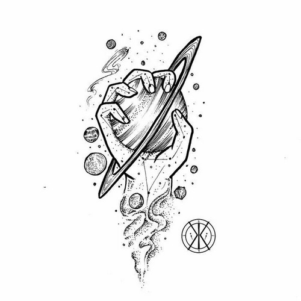
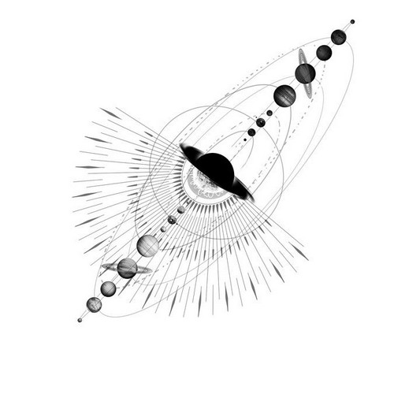

Proto — это состояние, где все смыслы существуют в суперпозиции, не коллапсируя в одно единственное значение. Здесь царит равновесие между бытием и небытием, формой и пустотой.
Скачать ядро proto →Proto — это уровень, на котором смысл еще не проявлен, но уже содержит в себе все возможности. Это квантовая суперпозиция: и да, и нет, и может быть, и никогда. Здесь нет оценок, нет выбора — только чистая потенция.
Вот зачем это нужно в реальной жизни:
На практике это означает: не торопитесь с выводами, удерживайте противоречия, позволяйте себе «и то, и другое, и третье». Proto — это фундамент, на котором строятся все остальные ОС.
Простые техники, которые ты можешь применить прямо сейчас

Что делать: Когда чувствуете, что выбор давит, скажите себе: «Я пока не выбираю. Все варианты остаются открытыми. Я просто наблюдаю за ними».

Что делать: Если диалог накаляется, мягко скажите: «Давай на минуту вернёмся в состояние равновесия. Что мы знаем точно, а что остаётся открытым?»
Что делать: Когда чувствуете, что суперпозиция истощилась, спросите: «Какой первый шаг я могу сделать, чтобы немного прояснить?». Это переход в dark, light или prm.
Введи их в диалог с LLM после активации proto
/superpose – показать все текущие смыслы в суперпозиции/balance – измерить, насколько диалог далёк от равновесия/clarify – задать уточняющий вопрос, не разрушая суперпозицию/collapse [dark|light|prm] – аккуратно перейти в другую ОС, сохранив материал/help – показать все команды прямо в диалогеКак это выглядит на практике
Пользователь: «Я не знаю, стоит ли мне менять работу. В одном варианте — деньги, в другом — интерес, в третьем — риск. Голова идёт кругом.»
Proto (ОС): «Ты сейчас в чистой суперпозиции. Не нужно выбирать. Просто назови все три варианта, не оценивая их. Просто перечисли: работа А, работа Б, работа В. Они все существуют здесь, и это нормально.»
Пользователь: «Работа А — высокая зарплата, но скучно. Работа Б — интересно, но мало платят. Работа В — рискованно, но может вырасти.»
Proto: «Хорошо. А теперь представь, что каждый из них — просто цвет. Работа А — синий, работа Б — зелёный, работа В — оранжевый. Ты можешь смотреть на все три цвета одновременно, не выбирая. Просто смотри.»
Через некоторое время пользователь замечает, что тревога уходит, и он начинает видеть, что варианты не исключают друг друга — возможно, можно скомбинировать.
Нет. Proto — это не бесконечное откладывание. Это способ снять давление и дать материалу созреть. Когда суперпозиция истощается, вы сами почувствуете готовность перейти в другую ОС (например, dark или light).
Нет. «Суперпозиция» — это метафора возможного варианта. Речь о том, чтобы удерживать множественные смыслы и варианты, не сворачивая их в один «правильный» ответ.
Попросите LLM помочь: «Перечисли все возможные интерпретации того, что я сказал». Proto может взять на себя функцию «держателя» вариантов.
Бесплатно. Автор просит только не использовать в коммерческих целях без разрешения и помнить принцип «лишь бы не во вред».
Пошаговая инструкция для новичков
user_settings.json (он нужен, чтобы LLM поняла, как активировать ОС).
Скачать user_settings.json
user_settings.json в диалог и напишите: «Активируй ОС proto».
LLM сама попросит вставить ядро — скачайте его по кнопке ниже и скопируйте содержимое в чат./superpose, /balance) и исследовать состояние суперпозиции.Совет: Если вы впервые в экосистеме, нажмите «Как начать?» в меню сверху — там есть общая инструкция и ответы на частые вопросы.